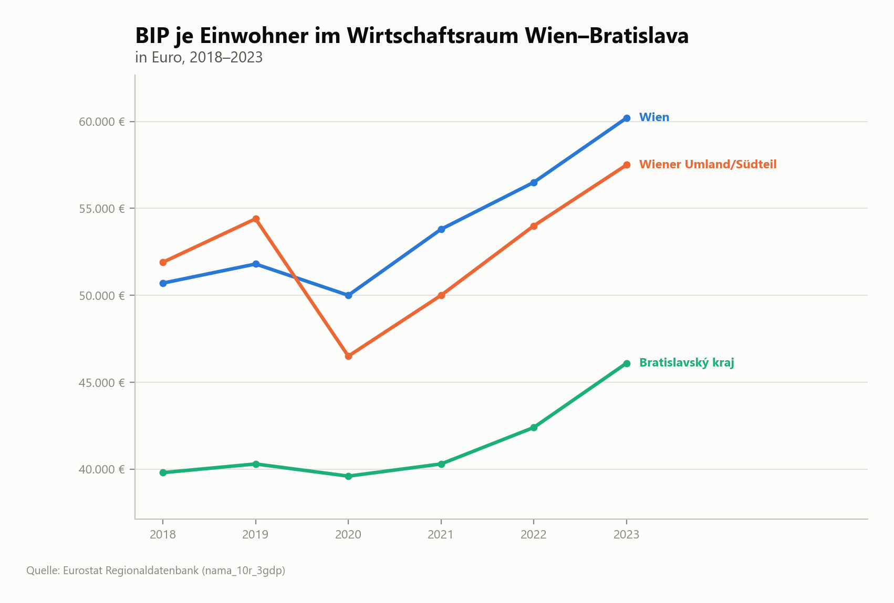
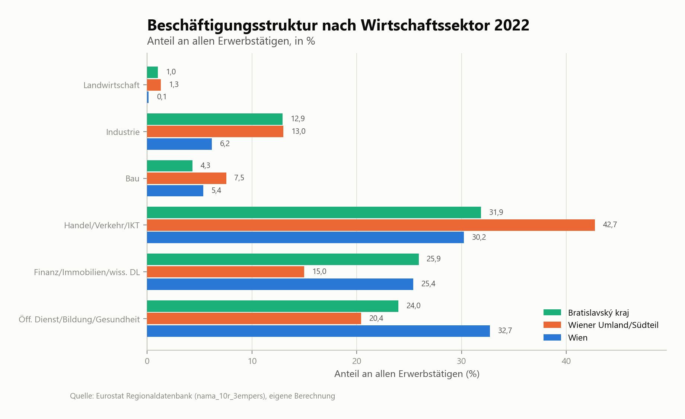
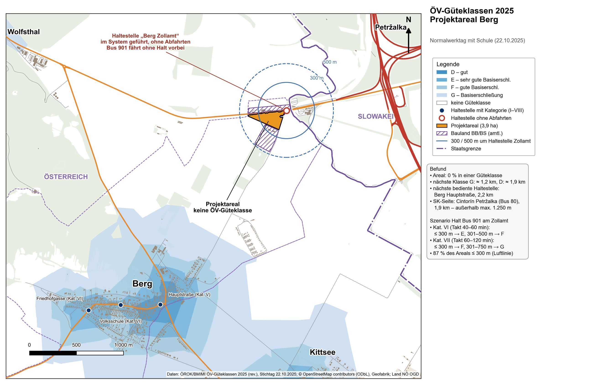
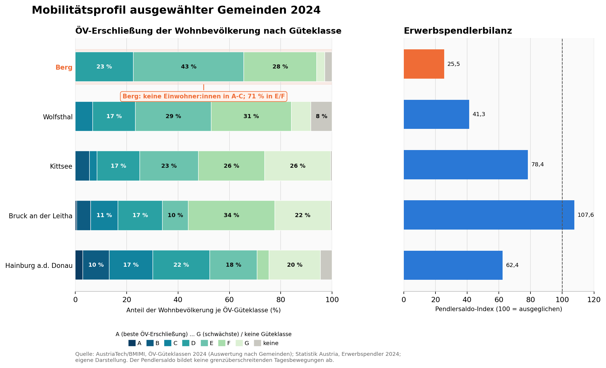
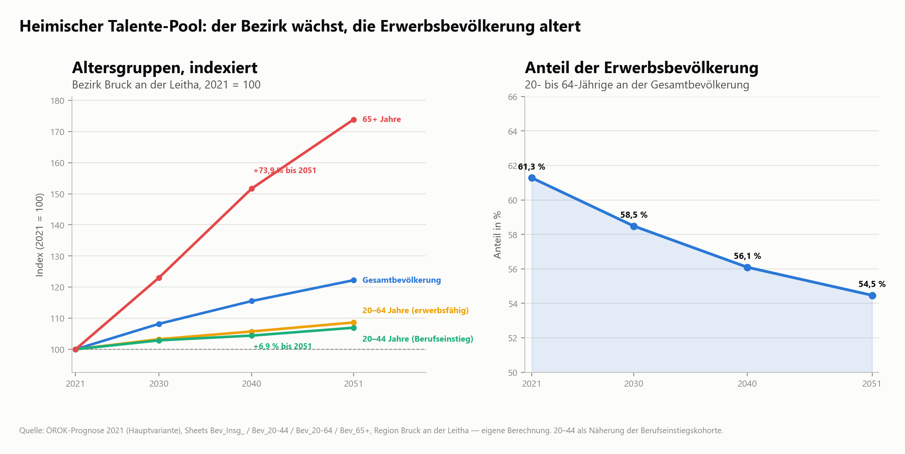
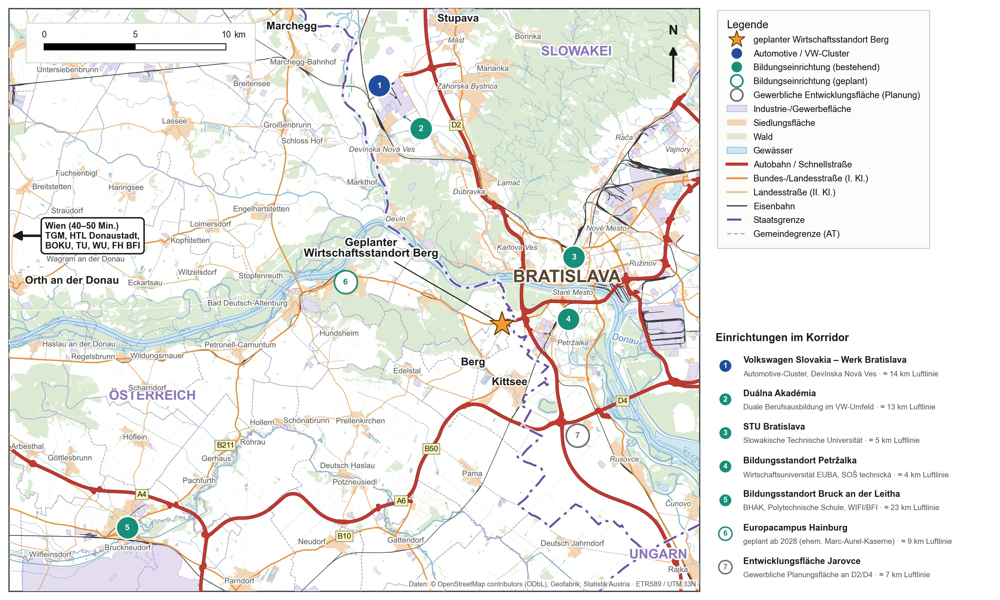
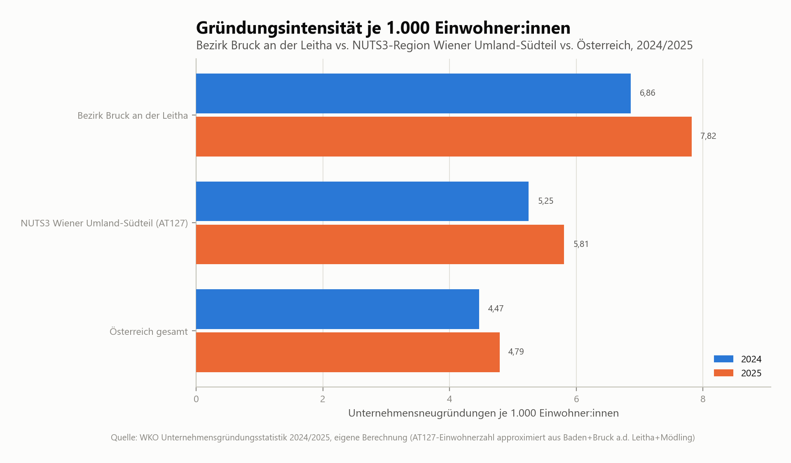
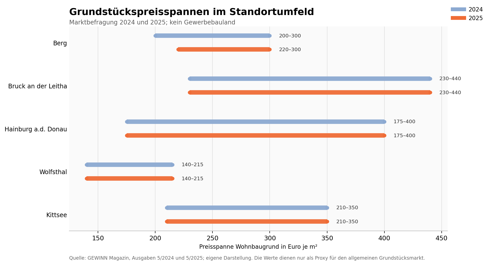

Kurzfassung
Zentrale Befunde auf einen Blick
Die Kurzfassung verdichtet die Kapitel 1 bis 8. Einschränkungen und Datenlücken sind in den Fachkapiteln ausgeführt.
- Lage: echte Grenzlage im TwinCity-KorridorDas Areal liegt direkt am früheren Grenzübergang Berg–Petržalka. Bratislava-Zentrum ist in rund 8, das VW-Werk in rund 20 und Wien in rund 49 Pkw-Minuten erreichbar (Kap. 3). Standortprägend ist die Orientierung nach Bratislava, nicht nach Wien.
- Bevölkerungsdynamik: solide, aber kein „Boom“Der amtliche Zuwachs des Bratislavský kraj von +13,1 % (2018–2025) ist etwa zur Hälfte ein statistischer Effekt der Volkszählung 2021. Ohne diesen Bruch wuchs die Region um rund +6,8 %, ähnlich wie Wien (+7,4 %) (Kap. 2).
- Wirtschaftsraum: VW-Cluster im Norden, Gewerbe im SüdenDer Automotive-Cluster liegt in Devínska Nová Ves, Stupava und Lozorno, 14–25 km nördlich. Im unmittelbaren Umfeld bestehen die Gewerbezone Petržalka-Kopčany (2,7 km) und der Businesspark/CTPark Kittsee (4,5 km). Der Industriepark „Jarovce–Kittsee“ ist bislang nur eine Planungsfläche im Bratislavaer Flächenwidmungsplan (Kap. 2).
- Markt: rund 1,2 Mio. Einwohner:innen in 45 MinutenDas Einzugsgebiet ist grenzüberschreitend und groß. Nutzbar wird es vor allem für Betriebe mit Bezug nach Bratislava, und nur bei guter Erreichbarkeit auch ohne Pkw (Kap. 3, 4).
- Fachkräfte: Engpässe bei Mechatronik und Logistik, Chancen bei WissensdienstenMechatronik und technische Zulieferung sind beidseits der Grenze Mangelfelder und konkurrieren mit dem VW-Cluster Bratislava. Wissensbasierte Dienstleistungen sind am wenigsten umkämpft. Der Europacampus Hainburg (ab 2028) ist der naheliegende Bildungsanker (Kap. 4).
- Energie: Hochspannung in der Nähe, Wind in SichtweiteDie nächste 110-kV-Leitung verläuft rund 1 km vom Areal. Im Umkreis von 15 km sind in OpenStreetMap elf Windparks mit zusammen rund 213 MW erfasst. Anschlusskapazitäten sind mit Netz NÖ bzw. APG zu klären (Kap. 6).
- Förderung: Nachteil gegenüber KittseeBerg liegt nicht im EU-Regionalfördergebiet. Kittsee, 4,5 km entfernt, kann Ansiedlungen mit bis zu 15/25/35 % (groß/mittel/klein) fördern. Bratislava ist ausgeschlossen. Der Nachteil trifft vor allem Produktion und Hallen, kaum wissensbasierte Nutzungen (Kap. 5).
- Markt: Hallen im Überangebot, Büros als NischeDer CTPark Kittsee vermietet Hallen um 5,50–5,90 €/m² und hat große freie Flächen; Bratislava verzeichnet mit 6,9 % den höchsten Hallenleerstand seit fünf Jahren. Büros in Bratislava kosten dagegen bis 21,50 €/m². Günstige, kleinteilige Büro- und Gründerflächen 8 Minuten vom Zentrum können eine Nische bedienen (Kap. 5).
- Effekte: Wissensnutzung bringt am meistenAuf rund 3,1 ha Nettofläche ergäben sich je nach Szenario etwa 125 (Logistik) bis 420 Arbeitsplätze (Wissens-/Gründerhof). Die Kommunalsteuer läge bei Vollbelegung zwischen rund 0,16 und 0,67 Mio. € pro Jahr (Kap. 8).
- Empfohlene PositionierungKleinteilig, hochwertig und komplementär zu den großflächigen Logistik- und Automotive-Standorten der Region. Schwerpunkt auf wissens- und ausbildungsnahen Nutzungen mit Bezug nach Bratislava und zum Europacampus (Kap. 8).
- Zentrale RestriktionenUmwidmung der Glf-Teilflächen (0,63 ha), Zweckbindung der BS-Flächen (1,6 ha), keine ÖV-Güteklasse am Areal (die Linie 901 fährt ohne Halt vorbei), fehlende belastbare Flächennachfragedaten sowie die Nähe zu slowakischen Natura-2000-Gebieten (< 1 km) (Kap. 6, 8).
Kapitel 1
Projektareal & Auftrag
Grundlagenanalyse für ÖEK-Anpassung, Flächenwidmung und spätere Ausschreibung – mit Fokus auf den grenzüberschreitenden Wirtschaftsraum Wien–Bratislava.
Die Gemeinde Berg und das Land Niederösterreich wollen ein Areal am ehemaligen Grenzübergang Berg an der B9 gemeinsam entwickeln und verwerten. Ziel ist ein hochwertiger, arbeitsplatzintensiver und nachhaltig ausgerichteter Betriebsstandort mit klarem Profil in der TwinCity-Region Wien–Bratislava.
Das Areal liegt im Bezirk Bruck an der Leitha südlich der B9. Der ehemalige Grenzübergang Berg–Petržalka mit der Staatsgrenze liegt nur wenige hundert Meter östlich. Es umfasst rund 3,9 ha auf zehn Flurstücken (KG Berg 05102). Die Flurstücksabgrenzung ist aus der Digitalen Katastralmappe (BEV) rekonstruiert. Für Analysezwecke ist sie ausreichend genau, für rechtsverbindliche Zwecke ist sie mit Gemeinde bzw. Vermessungsamt zu verifizieren.

Flurstücke und Flächenwidmung
Die zehn Flurstücke haben keine einheitliche Widmung.
- Bauland-Betriebsgebiet (BB, 1,67 ha): gewerblich nutzbar.
- Bauland-Sondergebiet (BS, 1,62 ha): nur für den im Flächenwidmungsplan festgelegten Zweck nutzbar (siehe Kasten unten).
- Umwidmung nötig: Ein östlicher Teil (Flurstücke 479/7 und 479/8) ist als Grünland-Land- und Forstwirtschaft (Glf, 0,63 ha, 16 % der Fläche) gewidmet.
- Kleinstflurstücke: Drei Flurstücke umfassen zusammen nur rund 0,035 ha. Das ist für Zusammenlegung und Eigentumsklärung relevant.

Abgleich mit den amtlichen Widmungsdaten des Landes NÖ
Der offene Datensatz „Widmungsumhüllende“ des Landes NÖ (Stand 22.09.2026) bestätigt die Rekonstruktion:
- Im Areal liegen 1,67 ha Bauland-Betriebsgebiet und 1,61 ha Bauland-Sondergebiet.
- Beide Widmungen sind seit 5.1.2023 rechtswirksam, wurden also erst vor Kurzem festgelegt.
Neu: Unmittelbar angrenzend, aber außerhalb der zehn Flurstücke, sind weitere Flächen gewidmet:
- 4,19 ha Bauland-Betriebsgebiet südwestlich des Areals
- 2,32 ha Bauland-Sondergebiet nördlich der B9, im ehemaligen Abfertigungsbereich
Rund um den früheren Grenzübergang sind damit knapp 10 ha Bauland gewidmet. Eigentum und Verfügbarkeit dieser Nachbarflächen sollten geklärt werden. Sie sind ein mögliches Erweiterungs- oder Arrondierungspotenzial und zugleich eine mögliche Konkurrenz.
Zweckbindung des Bauland-Sondergebiets (BS)
Rechtslage: Nach § 16 Abs. 1 Z 6 NÖ ROG 2014 sind Sondergebiete für bauliche Nutzungen bestimmt, „deren besonderer Zweck im Flächenwidmungsplan durch einen Zusatz zur Signatur ausdrücklich festgelegt ist“. Eine gewerbliche Nutzung außerhalb dieses Zwecks ist ohne Änderung des Flächenwidmungsplans nicht zulässig; nötig wäre eine Umwidmung in BB oder ein neuer Zusatz. Bauvorhaben müssen widmungskonform sein.
Anlass für eine Änderung: In Frage kommt § 25 Abs. 1 Z 2 NÖ ROG („wesentliche Änderung der Grundlagen“), etwa der Wegfall der Grenzkontrollen seit dem Schengen-Beitritt 2007. Alternativ Z 5 (Umsetzung eines Entwicklungskonzepts) im Zuge der ÖEK-Anpassung.
Auffällig: Das Land klassifiziert die BS-Flächen am Areal in seinen Geodaten nicht als Verkehrs- oder Grenzeinrichtung. Die Einstufung (HILUCS) lautet „Kultur-, Unterhaltungs- und Freizeitdienstleistungen“. Der tatsächliche Zusatz weicht damit möglicherweise von „Einrichtungen des Grenzverkehrs“ ab. Er ist im rechtsgültigen Flächenwidmungsplan bei der Gemeinde einzusehen. Davon hängt ab, welche Nutzungen auf 1,6 ha ohne Umwidmung möglich sind.
Bestandsgebäude und Altlasten
Im Areal stehen laut OpenStreetMap fünf Gebäude mit zusammen rund 1.960 m² Grundfläche. Die größte, eingeschoßige Halle (rund 1.030 m²) und ein weiteres Gebäude (rund 350 m²) sind als leerstehend erfasst. Auf den angrenzenden Bauland-Flächen stehen weitere sieben Gebäude mit rund 2.280 m², darunter die Container der Grenzpolizei.
Direkt nördlich der B9 steht das ehemalige Stationsgebäude der Pressburger Bahn, der elektrischen Lokalbahn Wien–Bratislava (1914–1945). Es ist ein möglicher Identitätsanker für ein „Grenzentree“.
Bauzustand, Nutzflächen, Denkmalschutz und Eigentum der Gebäude sind noch zu erheben. Ein Teil könnte sich für eine Zwischennutzung eignen, etwa einen Pilot-Gründerhof oder einen Tagungs- und Infopunkt, bevor neu gebaut wird.
Altlasten
Im öffentlichen Altlastenatlas des Umweltbundesamts (WFS „Kontaminierte Flächen“, Abruf 29.09.2026) ist im Areal und im Umkreis von 4 km keine Fläche verzeichnet. Die nächste ist die Gemeindedeponie SW Kittsee in 4,35 km, eingestuft als „keine Altlast“.
Der Dienst zeigt nur veröffentlichte Flächen. Eine ehemalige Zollstation mit Lkw-Abfertigung und Abstellflächen ist ein typischer Verdachtsfall. Empfohlen werden eine Auskunft beim Land NÖ bzw. Umweltbundesamt und bei Bedarf eine orientierende Untersuchung vor der Grundstücksvergabe.
Technische Infrastruktur
Glasfaser: symmetrischer Gigabit-Anschluss (FTTH, A1) am Zollamtsstandort, Datenstand Q1/2026. Mobilfunk: 5G bis 563 Mbit/s (Drei), 4G aller drei Netzbetreiber. Strom: 110-kV-Leitung in rund 1 km Entfernung (Kap. 6).
Straße
Das Areal liegt direkt an der B9 (Pressburger Straße), die in die Viedenská cesta nach Bratislava übergeht. Auf österreichischer Seite gibt es keinen eigenen Autobahnanschluss. Die slowakische D2 ist rund 1 km entfernt (Luftlinie), die A6 bei Kittsee rund 4,5 km.
Leitbild und Zielbranchen-Hypothese
Das Honorarangebot gibt als Leitbild einen hochwertigen, arbeitsplatzintensiven und nachhaltigen Betriebsstandort vor. Die Zielbranchen sind im Zuge der Bearbeitung zu definieren. Als einzige Beispielnutzung nennt der Auftrag ein Business- und Seminarhotel. Büro M hat daraus sechs Zielbranchen als Arbeitshypothese abgeleitet. Sie werden in den Kapiteln 3 bis 7 geprüft:
- Green Tech, Nachhaltigkeit und Energie
- Technische Zulieferung und Mechatronik
- Kleinteilige Logistik
- Wissensbasierte Dienstleistungen
- Business- und Seminarhotel
- Kaufmännische Bestandskräfte
Die Auswahl ist nicht aus einer externen Studie abgeleitet, sondern von Büro M gesetzt und anschließend geprüft worden.
Rollenteilung in der Arge
Büro LP: standörtliche Ausgangssituation, raumordnungsrechtliche Rahmenbedingungen, Erschließungs- und Eigentumssituation.
Büro M (dieses Dokument): Einordnung in den Wirtschaftsraum TwinCity, Entwicklungstendenzen und Standortnachfrage, Benchmarking vergleichbarer Standorte, Potenziale, Restriktionen und Perspektiven.
Kapitel 2
Wirtschaftsraum TwinCity
Berg liegt zwischen zwei EU-Hauptstädten, die nur rund 55 km Luftlinie trennen. Wirtschaftlich ist der Standort vor allem auf Bratislava bezogen.

Wirtschaftsstruktur im Umfeld
| Teilraum | Wichtige Einrichtungen | Luftlinie | Pkw |
|---|---|---|---|
| Gewerbezone Petržalka-Kopčany (SK) | REHAU, Petit Press (Druckerei), Hochstaffl, PLUSIM, Penam-Großbäckerei, Autohandelsmeile Panónska cesta | 2,7 km | 6 min |
| Kittsee (AT) | Businesspark/CTPark Kittsee (Logistik- und Produktionshallen an der A6), Hauswirth Schokoladefabrik, Emka Beschlagteile, Palbox, Fachmarktzentren K1/K2 | 4,5 km | 9 min |
| Jarovce (SK) | Autobahnknoten D2/D4, Grenzübergänge A6/D2 und Kittsee–Jarovce, Raststätten D2; Industriepark „Jarovce–Kittsee“ nur als Planungsfläche im Flächenwidmungsplan | 5–6 km | – |
| Bratislava-Zentrum | Eurovea, Twin City, Incheba Expo; Hafen Bratislava | 4–6 km | 8 min |
| VW-Cluster (Devínska Nová Ves, Stupava, Lozorno) | VW-Werk Bratislava, CTPark Bratislava (u. a. HP Pelzer), VW Stupava, P3 Lozorno (Plastic Omnium, Dachser, IAC) | 14–25 km | 20 min (VW-Werk) |
| Osten Bratislavas | Slovnaft-Raffinerie, Industriezone Nové Mesto/Vajnory (Mondelez, Istrochem, Matador), Flughafen Bratislava mit DHL-Hub, Logistikparks Rača | 8–14 km | 15 min (Flughafen) |
| Edelstal / Wolfsthal (AT) | Coca-Cola HBC/Römerquelle (Edelstal), Metallbau Eybel (Wolfsthal) | 3–5 km | – |
Richtigstellung: Jarovce–Kittsee und der VW-Cluster
Die Vorfassung sprach von einem „VW-Cluster Jarovce–Kittsee“. Das VW-Werk und seine Zulieferer liegen jedoch 14–25 km nördlich in Devínska Nová Ves, Stupava und Lozorno.
Der „Industriepark Jarovce–Kittsee“ ist im Flächenwidmungsplan Bratislavas als Entwicklungsfläche vorgesehen (Technologie-/Industriepark in südwestlicher Entwicklungsrichtung). Er ist aber weder realisiert noch in Vermarktung.
Als bestehende Wettbewerber im Nahbereich sind daher vor allem der Businesspark/CTPark Kittsee und die Gewerbezone Petržalka-Kopčany zu sehen. Jarovce–Kittsee bleibt eine langfristige Planungsoption, die zu beobachten ist.
Bevölkerungsdynamik
Die Vorfassung wies für den Bratislavský kraj +14,1 % (2018–2024) aus und leitete daraus einen „Wachstumsschub“ ab. Die Zeitreihe enthält aber einen methodischen Bruch: Mit der Volkszählung 2021 wurde der Bevölkerungsstand revidiert. Zwischen 1.1.2021 und 1.1.2022 steigt er deshalb um +6,9 % in einem einzigen Jahr.
Bereinigt um diesen Bruch wuchs die Region 2018–2025 um rund +6,8 % (≈ 0,9 % p.a.). Das liegt im Bereich Wiens (+7,4 %) und über dem Wiener Umland-Südteil (+4,9 %), zu dem der Bezirk Bruck an der Leitha gehört.
Die Region wächst also stabil, aber nicht außergewöhnlich. Für die Standortnachfrage ist das ein solides, jedoch kein Sonderargument.

BIP und Beschäftigungsstruktur
Beim nominalen BIP je Einwohner:in liegt der Bratislavský kraj (2023: rund 46.000 €) unter Wien (rund 60.000 €) und dem Wiener Umland-Südteil (rund 57.000 €). Er holt seit 2021 aber deutlich auf.
Kaufkraftbereinigt (PPS, 2024) liegt Bratislava bei rund 153 % des EU-Durchschnitts, Wien bei rund 137 %, Niederösterreich bei rund 98 %. Beide Kennzahlen messen Wirtschaftsleistung am Arbeitsort, nicht den Wohlstand der Wohnbevölkerung. In Bratislava sind sie zudem durch viele Einpendler:innen aus dem Umland nach oben verzerrt. Belastbar ist die Aussage „leistungsstarke, kaufkräftige Nachbarregion“, nicht „eine der wohlhabendsten Regionen der EU“.

Alle drei Regionen sind dienstleistungsdominiert. Den Industrieanteil an den Erwerbstätigen (knapp 13 %) teilen sich Bratislava und das Wiener Umland-Südteil. Wien liegt mit rund 6 % deutlich darunter. Bratislava hat einen überdurchschnittlichen Anteil an Finanz- und wissensbasierten Dienstleistungen (rund 26 %).

Kapitel 3
Erreichbarkeit
Mit dem Pkw ist Berg ein Standort am Rand Bratislavas. Mit öffentlichen Verkehrsmitteln ist das Areal bisher praktisch nicht erschlossen.

| Ziel | Fahrzeit | Ziel | Fahrzeit |
|---|---|---|---|
| Gewerbezone Petržalka-Kopčany | 6 min | Parndorf (A4/A6) | 23 min |
| Bratislava-Zentrum | 8 min | Mosonmagyaróvár (HU) | 30 min |
| CTPark Kittsee | 9 min | Trnava (SK) | 37 min |
| Hainburg / Europacampus | 10 min | Flughafen Wien-Schwechat | 41 min |
| Flughafen Bratislava | 15 min | Wien-Zentrum | 49 min |
| VW-Werk Bratislava | 20 min | Győr (HU) | 52 min |
Das Einzugsgebiet ist stark slowakisch geprägt. Von den rund 0,67 Mio. Einwohner:innen im 30-Minuten-Bereich leben rund 598.000 in der Slowakei, rund 50.000 in Österreich und rund 19.000 in Ungarn. Wien liegt erst im 45- bis 60-Minuten-Bereich. In der Hauptverkehrszeit sind die Fahrzeiten vor allem in Bratislava deutlich länger.
ÖV-Erschließung als Schwachpunkt
Die ÖV-Güteklassen (ÖROK/BMIMI) bewerten die Anbindung an Bus und Bahn von A (höchstrangig) bis G (Basiserschließung). Grundlage sind Haltestellen mit ihrem Takt zwischen 6 und 20 Uhr und die Fußwegdistanz bis höchstens 1.250 m.

Das Areal selbst liegt in keiner ÖV-Güteklasse, an beiden Stichtagen 2025 (Schultag 22.10. und Herbstferien 29.10.). Das gilt auch für die angrenzenden Bauland-Flächen.
- Haltestelle am Areal ohne Busse: Die Haltestelle „Berg (Wolfsthal) Zollamt“ liegt 20 m vom Areal entfernt und ist im System geführt, hat aber keine Abfahrten.
- Nächste bediente Haltestelle: Berg Hauptstraße, 2,2 km entfernt (Linien 297/299, Kategorie V).
- Linie 901: Sie wird erst in Wolfsthal, Am Friedhof gezählt, 3,2 km entfernt.
- Slowakische Seite: Die nächste Haltestelle ist „Cintorín Petržalka“ (Bus 80) in 1,9 km. Das liegt außerhalb der maximalen Fußwegdistanz; zudem erfasst das System nur Österreich.
| Stichtag | D | E | F | G | keine |
|---|---|---|---|---|---|
| Normalwerktag mit Schule (22.10.2025) | 19 % | 48 % | 27 % | 4 % | 3 % |
| Werktag in den Herbstferien (29.10.2025) | – | 30 % | 38 % | 29 % | 3 % |
Im Ortsgebiet erreicht Berg damit bestenfalls Klasse D; in den Ferien fällt auch diese weg. In der Vorfassung waren es nach den Daten 2024 noch 22,7 % in Klasse D.
Den Vergleich mit den Nachbargemeinden zeigt Abb. 9 (Datenstand 2024). Wolfsthal (rund 24 % in A–D) und Kittsee (rund 25 %) liegen kaum besser als Berg. Deutlich besser erschlossen sind Hainburg (52,4 %) und Bruck an der Leitha (33,9 %).

Ansatzpunkte für die „letzte Meile“
- Linie 901 (Bratislava–Hainburg, ARRIVA/IDS BK): Laut amtlichem Fahrplan (Lizenz 102833) fährt der Bus von Bratislava, Einsteinova ohne Zwischenhalt in 9 Minuten nach Wolfsthal, Am Friedhof. Das geht nur über den Grenzübergang Berg–Petržalka, der Bus fährt also auf der B9 direkt am Areal vorbei. Eine Haltestelle gibt es dort derzeit nicht.
- Angebot: Laut IDS BK aktuell werktags 23 Kurspaare, in der Hauptverkehrszeit alle 30 Minuten, sonst etwa stündlich (Fahrplan-PDF 2022: 16 Fahrten je Richtung); sonntags etwa alle zwei Stunden.
- Machbarkeit: Ein zusätzlicher Halt ist naheliegend. Er kostet nur rund eine Minute Fahrzeit, liegt in der bereits bedienten Tarifzone 190, und an der B9 sind ehemalige Abfertigungsflächen vorhanden.
- Voraussetzungen: eine Änderung der Linienkonzession (Antrag über VOR/Land NÖ und IDS BK) sowie die Zustimmung des Straßenerhalters der B9 (Land NÖ) für eine Haltestellenbucht.
- Effekt eines Halts am Zollamt: Die Linie 901 allein käme dort nach ÖROK-Methode voraussichtlich auf Haltestellenkategorie VI (Ø-Takt 40–60 min, bei rund 15–17 Abfahrten je Richtung zwischen 6 und 20 Uhr).
- Kategorie VI: Flächen bis 300 m Fußweg erhalten Klasse E („sehr gute Basiserschließung“), 301–500 m Klasse F.
- Lage des Areals: 87 % liegen innerhalb von 300 m Luftlinie, der Rest innerhalb von 500 m. Das Areal würde damit überwiegend E erreichen.
- Kategorie VII: Bei ausgedünntem Fahrplan (60–120 min) wären es F bzw. G.
- Klasse D: Dafür wäre Kategorie V nötig, also ein Takt von 20–40 Minuten (mindestens 21 Abfahrten je Richtung), etwa durch eine Verdichtung der 901 oder zusätzlich die Linie 297 über das Zollamt.
- Aufwand: Da die Haltestelle bereits im System geführt wird, ist dafür keine neue Infrastrukturplanung im engeren Sinn nötig. Nötig ist vor allem eine Änderung der Bedienung.
- Linie 902 (Testbetrieb, Interreg NUTSHELL@CE): Bratislava-Petržalka – Kittsee – Berg – Edelstal – Prellenkirchen, dreimonatig und kostenlos. Linienführung, Haltestelle am Areal und dauerhafter Betrieb sind noch offen.
Kapitel 4
Fachkräfte & Bildung
Steht dem geplanten Betriebsstandort ein ausreichendes und realistisch erreichbares Fachkräftepotenzial gegenüber? Und was folgt daraus für Zielbranchen und Ausschreibung?
Heimischer Talente-Pool
Der Bezirk Bruck an der Leitha wächst laut ÖROK-Prognose bis 2040 um +15,5 %. Die Erwerbsbevölkerung altert jedoch: Der Anteil der 20- bis 64-Jährigen sinkt von 61,3 % (2021) auf 54,5 % (2051). Die Gruppe 65+ wächst bis 2051 um +73,9 %, die Berufseinstiegskohorte 20–44 nur um +6,9 %.
Ein zusätzlicher, arbeitsplatzintensiver Standort kann sich damit nicht allein aus dem Bezirk speisen. Er ist auf Einpendler:innen angewiesen, realistisch vor allem aus Bratislava.

Grenzüberschreitendes Einzugsgebiet
Ältere Grenzverkehrszählungen weisen an einem durchschnittlichen Werktag mehr als 50.000 Grenzübertritte zwischen Österreich und der Slowakei aus. Rund die Hälfte davon ist arbeitsbezogen. Seit den frühen 2000er-Jahren ziehen zudem slowakische Familien nach Berg und in die Nachbargemeinden.
Diese Quellen belegen die Durchlässigkeit der Grenze, nicht aber ein verfügbares Fachkräftepotenzial. Ob es sich nutzen lässt, hängt von Erreichbarkeit, Arbeitsplatzqualität und Lohnniveau ab.
Der slowakische Mindestlohn beträgt 2026 915 € pro Monat. Für einen österreichischen Arbeitsort gelten österreichische Kollektivverträge. Die Annahme „slowakisches Lohnniveau am österreichischen Standort“ ist daher ein Investorenrisiko.
Für grenzüberschreitende Telearbeit gilt seit 2023 eine Rahmenvereinbarung: Bei 25 bis unter 50 % Telearbeit im Wohnstaat kann auf Antrag die Sozialversicherung im Beschäftigungsstaat beibehalten werden.
Lehrlingsausbildung
Mit 945 Lehrlingen liegt der Bezirk absolut auf Rang 7 der 20 NÖ-Bezirke. Bezogen auf die Einwohnerzahl sind es 8,6 je 1.000 Einwohner:innen und damit nur Rang 14.
Wichtig für die Interpretation: Die WKO zählt Lehrlinge am Standort des Lehrbetriebs, nicht am Wohnort. Die niedrige Dichte zeigt daher zunächst ein vergleichsweise geringes Angebot an Lehrbetrieben im Bezirk. Ob Jugendliche zur Ausbildung nach Wien pendeln, lässt sich daraus allein nicht ableiten.

Bildungs- und Berufspipeline
Der Europacampus Hainburg ist der naheliegende Bildungsanker für Green Tech und wissensbasierte Dienstleistungen. Getragen wird er von USTP und TU Wien, der Studienbetrieb beginnt im WS 2028/29. Verbindlich ausgewiesene Unternehmenskooperationen hat er noch nicht, daraus ergibt sich eine First-Mover-Chance für Berg.
Für technische Berufe prägt die Duálna Akadémia in Devínska Nová Ves (VW, Siemens, Matador) die Ausbildungslandschaft der Region. Hinzu kommen STU Bratislava, TGM und HTL Donaustadt.
Auf österreichischer Seite fehlt eine HTL im Bezirk. Im Bezirk selbst sind BHAK/BHAS, PTS und WIFI/BFI in Bruck an der Leitha verfügbar.

Engpässe nach Zielbranche
| Zielbranche | Mangel AT | Mangel Raum Bratislava | Konkurrenz mit VW-Cluster / Industrie Bratislava | Begründung | Fazit für Berg |
|---|---|---|---|---|---|
| Technische Zulieferung / Mechatronik | stark | stark | stark | Mangelberufe deckungsgleich (Mechatronik, Schweißen, Montage, SPS) | schwierig nur mit hoher Arbeitsplatzqualität |
| Green Tech / Energie | stark | mittel | mittel | AT: rund 14.000 fehlende Elektrotechniker:innen; SK: Elektroberufe auf ÚPSVaR-Liste | möglich Europacampus als Hebel |
| Business-/Seminarhotel | stark | stark | gering | Küche/Service beidseits Mangelberufe | Personal knapp kaum Standortkonkurrenz |
| Kleinteilige Logistik | stark | stark | stark | Transport/Verkehr in AT zu 66 % betroffen; SK: Lager/Lkw auf ÚPSVaR-Liste; CTPark Kittsee in 4,5 km | schwierig |
| Wissensbasierte Dienstleistungen | gering | mittel | gering | Information/Consulting in AT am wenigsten betroffen (36 %) | gute Chancen |
| Kaufmännische Bestandskräfte | mittel | mittel | mittel | Einzelhandel/Büro unter den Top-Lehrberufen bei Mädchen | Basisversorgung kein Kernprofil |
Quelle: WKO Fachkräfte-Radar 2026, Fachkräfteverordnung 2026 (BGBl. II Nr. 316/2025), ÚPSVaR-Engpassliste Bratislavský kraj Q1/2025; Einstufung eigene Auswertung.
Handlungsempfehlungen Fachkräfte
- Das grenzüberschreitende Einzugsgebiet als Potenzial kommunizieren, nicht als gesicherte Fachkräftezahl.
- Eine Praxis- oder Bildungspartnerschaft mit dem Europacampus Hainburg frühzeitig sondieren. Kommt eine belastbare Vereinbarung zustande, kann sie in der Ausschreibung als Bonus gewertet werden.
- Das Lohnniveau früh und realistisch in der Kommunikation mit Investor:innen adressieren.
- Bei der Nutzung Logistik kleinteilig statt großflächig planen. Dafür sprechen Fachkräfteknappheit, fehlende ÖV-Anbindung für Schichtbetrieb und die nahe Konkurrenz in Kittsee.
Kapitel 5
Marktdynamik & Nachfrage
Die Einschätzung stützt sich auf indirekte Indikatoren (Proxys). Sie ist ausdrücklich als Indiz gekennzeichnet und keine quantifizierte Prognose der Flächennachfrage.
Datenlage
Echte Flächennachfragedaten, etwa die Vermittlungsstatistik von ecoplus oder Anfragen bei der Wirtschaftskammer, lagen nicht vor. Sie sollten für die weitere Bearbeitung nachgereicht werden.
Unternehmensgründungen
Der Bezirk Bruck an der Leitha zeigt eine überdurchschnittliche und steigende Gründungsdynamik. Die Gründungsintensität stieg von 6,86 (2024) auf 7,82 (2025) Neugründungen je 1.000 Einwohner:innen. Das ist deutlich mehr als in der NUTS-3-Region Wiener Umland-Südteil (5,81) und in Österreich insgesamt (4,79).
Ob Gründungen tatsächlich zu Nachfrage nach Gewerbeflächen führen, sagt die Statistik nicht. Zu prüfen ist, ob die verwendeten Werte selbständige Personenbetreuer:innen enthalten. Die WKO weist beide Varianten aus.

Grundstückspreise im Umfeld
Laut GEWINN-Erhebung stiegen die Wohnbaugrundpreise in Berg leicht, von 200–300 €/m² (2024) auf 220–300 €/m² (2025). In Bruck an der Leitha, Hainburg, Wolfsthal und Kittsee blieben die Preisspannen 2025 unverändert. Die GEWINN-Einstufung „stark steigend“ für Bruck und Kittsee spiegelt sich in den Spannen nicht wider.
Es handelt sich um Wohnbaugrund aus einer Marktbefragung. Die Werte zeigen ein stabiles Preisniveau, aber keine Nachfrage nach Gewerbeflächen.

Gewerbeflächenmarkt
Angebotspreise für Gewerbegrund im Bezirk Bruck an der Leitha liegen bei rund 140–400 €/m²; größere Grundstücke werden meist zu 230–250 €/m² angeboten. Für Betriebsgrund in Berg ist rund 150–250 €/m² eine plausible Annahme, die ein Verkehrswertgutachten bestätigen sollte.
| Markt | Halle/Logistik (Miete netto) | Leerstand | Büro |
|---|---|---|---|
| CTPark Kittsee (Angebote) | 5,50–5,90 €/m²/Monat; freie Hallen von 350 bis über 40.000 m² | große Flächen verfügbar | – |
| Wien und Umland (CBRE 2025) | 7–9 €/m²/Monat | niedrig | – |
| Region Bratislava (CBRE Q1/2026) | Spitzenmiete 5,95 €, Ø 4,55 €/m²/Monat | 6,9 % (Fünfjahreshoch) | Spitzenmiete 21,50 €/m²/Monat; Leerstand 13,4 %, Südufer 7,2 % |
Für Hallen und Logistik gibt es im Umfeld reichlich und günstiges Angebot. Ein weiterer Hallenstandort in Berg hätte keinen Nachfragevorteil.
Im Büro-Segment ist Bratislava dagegen teuer, und am Südufer der Donau ist der Leerstand am niedrigsten. Hier liegt eine mögliche Nische für kleinteilige, günstigere Büro- und Gründerflächen in Grenznähe.
Der Businesspark Kittsee umfasst 35 ha, eine Erweiterung um 14 ha ist geplant. Laut Bericht vom April 2024 schließt der Bürgermeister weitere Bodenversiegelung für Handel und Gewerbe in seiner Amtszeit aus; die Erweiterung ist damit derzeit blockiert.
Förderkulisse
| Standort | Status | max. Beihilfe (groß / mittel / klein) |
|---|---|---|
| Berg (NÖ, Wiener Umland-Südteil) | kein Fördergebiet | – |
| Kittsee, Pama, Edelstal (Nordburgenland) | Fördergebiet | 15 % / 25 % / 35 % |
| Region Bratislava | ausgeschlossen | – |
| Westslowakei (z. B. Trnava) | Fördergebiet | bis 30 % (groß) |
Der unmittelbare Konkurrenzstandort Kittsee kann Betriebsansiedlungen mit Regionalbeihilfen fördern, Berg nicht. Der Nachteil trifft vor allem investitionsintensive Produktion und Hallen. Für wissensbasierte Nutzungen ist die Regionalbeihilfe weniger entscheidend.
In Berg bleiben nicht gebietsgebundene Instrumente: KMU-Investitionsförderung nach AGVO sowie aws-, ecoplus-, FFG- und Interreg-Mittel. Das stützt die empfohlene Positionierung zusätzlich.
Investitionsumfeld Bratislava
Der Bratislavský kraj bündelt den Großteil der ausländischen Direktinvestitionen der Slowakei, laut SARIO-Regionsprofil zuletzt rund zwei Drittel des FDI-Bestands. Die Struktur ist automobilzentriert, mit wachsendem Dienstleistungs- und IT-Sektor.
Die verfügbaren SARIO-Daten reichen allerdings nur bis 2010–2013. Für die weitere Bearbeitung sollten aktuelle NBS- und SARIO-Daten herangezogen werden.
Verdichtete Einschätzung
Gründungsdynamik, stabile Bodenpreise und ein starkes Investitionsumfeld jenseits der Grenze deuten auf ein günstiges Umfeld hin. Die Marktdaten zeigen aber ein Überangebot an Hallen und einen Fördernachteil gegenüber Kittsee. Chancen liegen am ehesten bei kleinteiligen Büro-, Gründer- und Dienstleistungsflächen. Eine Bedarfsprognose ersetzt das nicht.
Kapitel 6
Energieinfrastruktur & Umwelt
Der Auftrag nennt eine nachhaltige Energieversorgung und eine klimaangepasste Entwicklung ausdrücklich als Prüfaspekte. Dieses Kapitel ist in der überarbeiteten Fassung neu.

Das Areal liegt am Rand eines der windstärksten Erzeugungsräume Österreichs (Parndorfer Platte, Bezirk Bruck an der Leitha). Das bietet Anknüpfungspunkte für ein Green-Tech-Profil, etwa Direktversorgung, Energiegemeinschaft, Speicher oder Wartungs- und Servicebetriebe der Windbranche.
Die nächstgelegenen Umspannwerke liegen auf slowakischer Seite (Lamač, Ostredky). Der Netzanschluss eines österreichischen Standorts erfolgt jedoch über das österreichische Verteilnetz (Netz NÖ). Freie Anschlusskapazitäten sind dort frühzeitig anzufragen.
Klimaindizes, Photovoltaik- und Energiebilanzdaten liegen als Rohdaten vor, sind aber noch nicht ausgewertet.
Natura 2000
Die überschlägige GIS-Vorprüfung ergibt keine direkte Überschneidung des Areals mit FFH- oder Vogelschutzgebieten, weder in Österreich noch in der Slowakei.
- Nächstgelegene Gebiete (Slowakei, entlang der Donau): Bratislavské luhy (SKUEV0064, rund 0,8 km) und Dunajské luhy (SKCHVU007, Vogelschutzgebiet, rund 0,9 km).
- In Österreich: Hundsheimer Berge (rund 1,7 km) und Parndorfer Platte – Heideboden (rund 5,2 km).
Wegen der geringen Entfernung ist frühzeitig zu klären, ob eine Naturverträglichkeitsprüfung bzw. eine grenzüberschreitende Beteiligung nötig ist.

Kapitel 7
Benchmarking
Orientierung bieten Standorte mit vergleichbarem Flächenmaßstab, öffentlicher Trägerschaft oder Wissensbezug, nicht großflächige Autobahnstandorte.
Kittsee, Parndorf und die Gewerbezone Petržalka-Kopčany sind für die Wettbewerbseinordnung relevant (Kap. 2). Wegen Größe, Verkehrsprofil und Nutzungsstruktur taugen sie aber nicht als Entwicklungsmodell für ein 3,9-ha-Areal.
Das Benchmarking umfasst zwei Gruppen. Kleinteilige österreichische Referenzen zeigen Prinzipien für Fläche und Organisation. Grenzüberschreitende europäische Referenzen liefern vor allem Lehren zur Governance.
| Standort | Fläche | Flächenmaßstab | Verkehrslage (ohne AB-Anschluss) | Wissensbezug | Trägerschaft | Grenzlage | Übertragbar auf Berg |
|---|---|---|---|---|---|---|---|
| Berg (Referenz) | 3,9 ha | kein eigener Autobahnanschluss · Wissensbezug angestrebt (Europacampus) · Gemeinde/Land · direkt an der Grenze | – | ||||
| Techno-Park Tulln | rund 5 ha | hoch | teilweise | hoch | hoch | teilweise | Thematischer Fokus, Campus-/Netzwerklogik |
| Orth an der Donau (Betriebsgebiet Nord) | rund 4,4 ha* | hoch | hoch | gering | hoch | teilweise | Maßvolle, kommunal steuerbare Entwicklung |
| xista science park | 4.060 m² BGF | teilweise | hoch | hoch | hoch | gering | Kleine, flexible Einheiten mit Forschungsanker |
| TFZ Wieselburg-Land | k. A. | teilweise | hoch | hoch | hoch | gering | Modulare Entwicklung, gemeinsame Versuchsinfrastruktur |
| Access Industrial Park Gmünd–Č. Velenice (AT–CZ) | rund 83 ha | gering | hoch | gering | hoch | hoch | Zweisprachige, gemeinsame Governance und Vermarktung |
| Collegium Polonicum (DE–PL) | Einzelgebäude | teilweise | hoch | hoch | teilweise | hoch | Bilateral getragener Bildungs-/Tagungsanker an der Grenze |
| Piazza Transalpina (IT–SI) | Platzfläche | teilweise | hoch | teilweise | hoch | hoch | EVTZ-Governance, symbolische Umnutzung von Grenzinfrastruktur |
| Alzette-Belval (LU–FR) | rund 120 ha | gering | teilweise | hoch | hoch | teilweise | Wissensanker-Prinzip; Maßstab nicht vergleichbar |
| Avantis Aachen–Heerlen (DE–NL) | rund 40 ha | teilweise | gering | teilweise | hoch | teilweise | Warnbeispiel: Profil ohne Nachfrageanker driftet |
Farben zeigen die Ähnlichkeit zu Berg: grün = hoch, gelb = teilweise, grau = gering. * Orth an der Donau hat laut amtlichen Widmungsdaten 35,6 ha Bauland-Betriebsgebiet in neun Flächen. Keine davon hat rund 3,9 ha. Die größte Fläche (20,6 ha) ist das Pfizer-Werk. Mit Berg vergleichbar ist am ehesten das „Betriebsgebiet Nord“ mit 4,4 ha, gewidmet seit 2022. Die Angabe „~3,9 ha“ der Vorfassung war nicht belegbar. Eigentum der Gemeinde und Lage an der L9 sind noch zu bestätigen. Korrigiert gegenüber der Vorfassung: Collegium Polonicum hat als Einzelgebäude nur „teilweise“ Flächenähnlichkeit; die Trägerschaft durch Universitäten ist nur „teilweise“ mit Gemeinde/Land vergleichbar.
Steckbriefe der Referenzstandorte
Techno-Park Tulln (~5 ha): Teil des Technopols Tulln, Fokus auf biobasierte Technologien. Die Flächen sind vollständig verwertet, Träger sind ecoplus und regionale Partner.
Orth an der Donau: „Betriebsgebiet Nord“, rund 4,4 ha Bauland-Betriebsgebiet, gewidmet seit 2022. Laut Vorfassung im Eigentum der Marktgemeinde und mit Beschränkung verkehrsintensiver Nutzungen; beides ist noch zu bestätigen. Lehre: klare Kriterien vor der Vermarktung.
xista science park (Klosterneuburg): rund 4.060 m² Büro/Labor, Einheiten ab ca. 15 m², Anbindung an das ISTA. Setzt eine konkrete Forschungspartnerschaft voraus.
TFZ Wieselburg-Land: Flexible Büro-, Labor- und Versuchsflächen zu Bioenergie, Agrar- und Lebensmitteltechnologie sowie Wasser. Die Grenzlage fehlt.
Access Industrial Park Gmünd–České Velenice: Gegründet 1991, gilt als erster grenzüberschreitender Industriepark Europas (rund 33 ha AT, 50 ha CZ). Rund 45 Unternehmen mit etwa 1.800 Beschäftigten.
Collegium Polonicum: Seit 1998/99 gemeinsames Institutsgebäude mit Konferenzzentrum von Viadrina und Universität Poznań an der Oderbrücke. Passt inhaltlich zum Baustein Seminarhotel.
Piazza Transalpina: Früherer Grenzplatz, im Zuge von GO!2025 zu einem gemeinsamen Stadtraum umgebaut (EVTZ GO).
Alzette-Belval: Ehemaliges Stahlwerksgelände mit dem Campus der Universität Luxemburg als Motor. GECT-getragen.
Avantis: Grenzüberschreitender Gewerbepark. Er war als High-Tech-Park geplant, fand in der Anfangsphase kaum Nachfrage und wurde erst durch Logistik und E-Commerce stabilisiert.
Schlussfolgerungen für Berg
- Flächenmaßstab und kommunale Steuerbarkeit sprechen für ein kleinteiliges Modell nach dem Vorbild von Orth und Tulln, nicht für Großflächenlogistik.
- Ein Wissensprofil wird erst mit einer vereinbarten Kooperation belastbar, etwa mit dem Europacampus, einer Hochschule, einer Forschungseinrichtung oder einem Ankerbetrieb.
- Grenzüberschreitende Governance braucht eine Rechtsform, zum Beispiel einen EVTZ oder einen Staatsvertrag. Die zweisprachige Standortbetreuung kann die Grenzlage aktiv zum Vorteil machen.
- Nutzungs-, Verkehrs-, Arbeitsplatz- und Nachhaltigkeitskriterien sollten vor der Ausschreibung verbindlich festgelegt werden. Das beugt einer Drift wie bei Avantis vor.
Kapitel 8
Potenziale, Restriktionen & Fazit
SWOT-Übersicht
Stärken
- Direkte Grenzlage, 8 Pkw-Minuten nach Bratislava-Zentrum
- 0,67 Mio. Einwohner:innen in 30 Minuten (grenzüberschreitend)
- Gigabit-Glasfaser (FTTH) und 5G bereits vorhanden
- Hochspannungsnetz in rund 1 km, starke Windkraftregion
- Zu 84 % bereits als Bauland gewidmet (seit 2023); weitere 6,5 ha Bauland direkt angrenzend
Schwächen
- Kleines, zersplittertes Areal (10 Flurstücke, 3 Kleinstflurstücke)
- Areal ohne ÖV-Güteklasse, kein eigener Autobahnanschluss
- Heimischer Talente-Pool altert, keine HTL im Bezirk
- Keine quantifizierten Flächennachfragedaten
- Kein EU-Regionalfördergebiet (Kittsee schon)
Chancen
- Kooperation mit dem Europacampus Hainburg (ab 2028)
- Halt der Linie 901 an der bestehenden Haltestelle „Zollamt“ → ÖV-Güteklasse E/F für das Areal
- Green-Tech-Profil mit Bezug zur regionalen Windkraft
- Grenzüberschreitende Governance (Vorbild: Access Industrial Park)
- Kaufkräftige Nachfrage aus Bratislava für Dienstleistungen und Tagungen; teures Büro-Segment in Bratislava
- Bestandsgebäude (≈ 1.960 m²) für eine Zwischennutzung
Risiken
- Fachkräftekonkurrenz mit VW-Cluster und Industrie Bratislava (Mechatronik, Logistik)
- Nahe Konkurrenzflächen mit Förder- und Preisvorteil: CTPark Kittsee (Hallen 5,50–5,90 €/m²), Gewerbezone Kopčany, langfristig Jarovce–Kittsee
- Umwidmung der Glf-Flächen mit offenem Ausgang; BS-Flächen nur für den festgelegten Zweck nutzbar
- Natura-2000-Gebiete in < 1 km (Slowakei)
Nutzungsszenarien
| Szenario | Leitnutzung | Flächenmodell | Voraussetzungen | Chancen / Risiken |
|---|---|---|---|---|
| A) Wissens- und Gründerhof „Europacampus“ | Wissensbasierte Dienstleistungen, Green-Tech-Start-ups | Kleine, flexibel kombinierbare Einheiten | Kooperation mit dem Europacampus, professionelles Standortmanagement, ÖV-Haltestelle | Geringster Verdrängungswettbewerb; Nachfrage erst ab 2028/29 belastbar |
| B) Kleinteiliges Gewerbe- und Handwerkerquartier | Gebäudetechnik, Energie-/Windservice, kleinteilige Zulieferung | Mehrere kleine Parzellen und Hallen | Umwidmung Glf, gesicherte Erschließung und Netzanschluss | Passt zu Flächenzuschnitt und Energieumfeld; Fachkräftekonkurrenz bei Mechatronik |
| C) Mischprofil mit Business-/Seminarhotel | Hotel als Frequenzanker, ergänzend Büroflächen | Ein größerer Baukörper plus Ergänzungsflächen | Tragfähiger Betreiber, Personalgewinnung | Grenzlage und Nähe zu Bratislava als Vorteil; Personalengpass |
Aus heutiger Sicht spricht am meisten für eine Kombination aus A und B, ergänzt um C als punktuelle Beimischung. Die Szenarien werden in AP2 ff. konkretisiert.
Arbeitsplatz- und Kommunalsteuereffekte
Die folgende Rechnung zeigt Größenordnungen, keine Prognose. Grundlage sind rund 3,1 ha Nettofläche: 3,92 ha abzüglich 20 % für innere Erschließung und Grün, mit Umwidmung der Glf-Fläche. Die Beschäftigungsdichten sind GIFPRO-Flächenkennziffern (m² Grundstück je Arbeitsplatz): Logistik 250, Produktion/Gewerbe 175, unternehmensbezogene Dienstleistungen 75. Die Löhne sind Durchschnittseinkommen 2023 je Branche (Statistik Austria). Die Kommunalsteuer beträgt 3 % der Lohnsumme und fließt an die Gemeinde Berg.
| Szenario | Arbeitsplätze | Ø Bruttojahreslohn | Lohnsumme p. a. | Kommunalsteuer p. a. | bei 60 % Auslastung |
|---|---|---|---|---|---|
| Logistik (Referenz, nicht empfohlen) | ≈ 125 | 41.400 € | 5,2 Mio. € | ≈ 156.000 € | ≈ 94.000 € |
| A) Wissens- und Gründerhof | ≈ 420 | 53.400 € | 22,3 Mio. € | ≈ 670.000 € | ≈ 400.000 € |
| B) Gewerbe- und Handwerkerquartier | ≈ 180 | 46.400 € | 8,3 Mio. € | ≈ 250.000 € | ≈ 150.000 € |
| C) Hotel (~110 Zimmer) + Büro | ≈ 330 | 48.500 € | 16,0 Mio. € | ≈ 480.000 € | ≈ 290.000 € |
Eine wissens- und dienstleistungsorientierte Nutzung bringt auf derselben Fläche drei- bis viermal so viele Arbeitsplätze und etwa viermal so viel Kommunalsteuer wie Logistik. Die empfohlene Kombination A + B liegt je nach Mischung bei rund 250–350 Arbeitsplätzen und 0,3–0,5 Mio. € Kommunalsteuer pro Jahr.
Zum Vergleich: Das Nettoergebnis des Gemeindehaushalts Berg betrug 2025 rund 416.000 € (offenerhaushalt.at).
Einschränkungen:
- Die Flächenkennziffern schwanken stark; bei Dienstleistungen reichen sie von 50 bis 100 m² je Arbeitsplatz.
- Szenario A setzt eine mehrgeschoßige Bebauung voraus.
- Die Löhne in Start-ups liegen oft unter dem Branchenschnitt.
- Ohne Umwidmung der Glf-Fläche fallen alle Werte um rund 16 % niedriger aus.
Schnittstelle zur Restriktionsanalyse (Büro LP)
Die Hinweise dieses Dokuments ersetzen keine vertiefte Restriktionsanalyse. Folgende Themen liegen bei Büro LP:
- Topografie, Boden und Altlasten
- Rechtsverbindliche Klärung der Widmung, einschließlich Umwidmung Glf und Zweckbindung BS
- Erschließungskosten sowie Eigentümerstruktur und Verfügbarkeit der zehn Flurstücke
- Umwelt-, Lärm- und Naturverträglichkeitsprüfung
Fazit
Berg ist kein Autobahn- und Logistikstandort. Es ist ein kleiner, sehr gut an Bratislava angebundener Grenzstandort mit Glasfaser, Netznähe und einem potenziellen Bildungsanker in Hainburg. Tragfähig erscheint ein kleinteiliges, öffentlich gesteuertes und thematisch fokussiertes Modell mit flexiblen Betriebsflächen.
Voraussetzungen sind:
- belastbare Nachfragegespräche
- eine ÖV-Haltestelle am Areal
- die Umwidmung der Glf-Flächen
- eine gesicherte Netz- und Verkehrserschließung
- eine vertiefte Umweltprüfung
Die Positionierung als komplementärer, wissens- und ausbildungsnaher Standort gewinnt an Tragfähigkeit, wenn diese Bedingungen offen benannt werden.
Nächste Schritte
- Kooperationsmöglichkeiten mit dem Europacampus Hainburg sondieren (USTP, TU Wien).
- Antrag auf eine Haltestelle der Linie 901 am Areal über VOR/Land NÖ und IDS BK stellen; Testbetrieb der Linie 902 auswerten.
- Den Wortlaut des BS-Zusatzes im Flächenwidmungsplan einsehen und Eigentum sowie Verfügbarkeit der angrenzenden Bauland-Flächen (4,19 ha BB, 2,32 ha BS) klären.
- Netzanschlusskapazität bei Netz NÖ anfragen.
- Flächennachfragedaten (ecoplus, WKO NÖ, SARIO) nachreichen.
- Die Widmungsrekonstruktion mit dem rechtsgültigen Flächenwidmungsplan abgleichen (Büro LP).
- Die Bestandsgebäude begehen und erheben (Zustand, Nutzfläche, Denkmalschutz, Eigentum) und eine Zwischennutzung prüfen.
- Beim Land NÖ bzw. Umweltbundesamt Auskunft zu nicht veröffentlichten Altstandorten einholen.
- Den Verkehrswert von Betriebsgrund in Berg gutachterlich ermitteln lassen.
- Nicht gebietsgebundene Förderungen (aws, ecoplus, FFG, Interreg) für die Entwicklung sondieren.
Anhang
Änderungen, Methodik & Quellen
Änderungsprotokoll gegenüber der Fassung vom 23.09.2026
| Thema | Vorfassung | Überarbeitete Fassung |
|---|---|---|
| Bevölkerung Bratislava | +14,1 % (2018–2024) als „Wachstumsschub“ gedeutet | Zensusbruch 2021 ausgewiesen; bereinigt rund +6,8 % (2018–2025), vergleichbar mit Wien (Abb. 4) |
| VW-Cluster | „VW-Cluster Jarovce–Kittsee“ | VW-Cluster in Devínska Nová Ves/Stupava/Lozorno verortet (Abb. 3) |
| Jarovce–Kittsee | wie ein bestehender Industriepark behandelt | als Planungsfläche gekennzeichnet; bestehende Konkurrenz: CTPark Kittsee, Gewerbezone Kopčany |
| Bezirk vs. Bratislava | +13,1 % in Bratislava als „schneller“ bezeichnet als +15,5 % im Bezirk bis 2040 | Logikfehler entfernt |
| Lehrlinge | Kennzahlkachel „945“ neben einer Grafik „je 1.000 EW“ (missverständlich) | Kachel „8,6 je 1.000 EW (945 absolut)“; Hinweis auf Zählung am Betriebsstandort |
| ÖV-Güteklassen | „E und F“ bzw. „E–G“ uneinheitlich; nur mit Hainburg/Bruck verglichen | einheitlich; Wolfsthal und Kittsee ergänzt; Linie 901 als Ansatz für die letzte Meile |
| Grundstückspreise | „durchgehend positive Trends“ | außer in Berg unveränderte Preisspannen; Aussage abgeschwächt |
| PPS-Vergleich | „eine der wohlhabendsten Regionen der EU“ | Pendlerverzerrung erläutert; Aussage relativiert |
| Widmungsbegriffe | „Sonderfläche“ bzw. „Grünland-Landwirtschaft“ | Bauland-Sondergebiet (BS); Grünland-Land- und Forstwirtschaft (Glf) |
| Abbildungen | Nummerierung nicht fortlaufend (Abb. 15 in Kap. 1); Bevölkerungskarte mit unterschiedlichen Zeitfenstern | fortlaufend nummeriert; Bevölkerungskarte durch einheitliche Zeitreihe ersetzt |
| Neue Inhalte | – | Karten zu Wirtschaftsraum, Projektareal, Energieinfrastruktur und Pkw-Erreichbarkeit; Kapitel Energie; HTML-Tabellen statt Bildtabellen |
| Benchmarking | Collegium Polonicum in allen Kriterien „hoch“; Orth „~3,9 ha“ | Flächenmaßstab und Trägerschaft „teilweise“; Orth korrigiert auf „Betriebsgebiet Nord“, 4,4 ha (amtliche Widmungsdaten) |
| Widmung (Nachtrag 29.09.) | nur Rekonstruktion aus Kartenskizze | Abgleich mit NÖ-Widmungsdaten: BB/BS bestätigt, rechtswirksam seit 2023; angrenzende Bauland-Flächen (6,5 ha) ergänzt; Rechtslage zur BS-Zweckbindung dargestellt |
| Ökonomische Ergänzungen (Nachtrag 29.09.) | – | Förderkulisse (Tabelle 6), Gewerbeflächenmarkt (Tabelle 5), Bestandsgebäude und Altlasten (Kap. 1), Arbeitsplatz- und Kommunalsteuereffekte (Tabelle 9); Kurzfassung, SWOT und nächste Schritte ergänzt |
| ÖV-Güteklassen Areal (Nachtrag 29.09.) | nur Güteklassen der Wohnbevölkerung im Ort (2024) | Güteklassen 2025 mit dem Areal verschnitten: keine Güteklasse; Haltestelle „Zollamt“ ohne Abfahrten; Szenario Halt 901 → E/F; Ortswerte 2025 für beide Stichtage (Abb. 8, Tabelle 3) |
| ÖV (Nachtrag 29.09.) | „letzte Meile ungelöst“ | Linie 901 fährt laut amtlichem Fahrplan ohne Halt am Areal vorbei; Weg zu einer Haltestelle beschrieben |
Offene Prüfpunkte
Flächenangabe Orth an der Donau– geklärt: „Betriebsgebiet Nord“ rund 4,4 ha (amtliche Widmungsdaten); Eigentum noch zu bestätigen.- Klären, ob die Gründungszahlen der WKO mit oder ohne selbständige Personenbetreuung verwendet wurden.
Zweckbindung BS– rechtlich geklärt: Eine Nutzung außerhalb des Zusatzes erfordert eine Änderung des Flächenwidmungsplans. Offen: der genaue Wortlaut des Zusatzes (Land klassifiziert „Kultur/Unterhaltung/Freizeit“).Linie 901– geklärt: Der Bus fährt am Areal vorbei, ohne Halt. Ein Halt ist per Änderung der Linienkonzession möglich; ein Antrag steht aus.- Die Stromnetzdaten stammen aus OpenStreetMap; Kapazitäten und Vollständigkeit sind nicht verifiziert.
Methodik der neuen Karten und Kennzahlen
- Projektareal: Aus der Flurstücks- und Widmungsgrafik der Vorfassung digitalisiert und an vier Straßen- und Wegpunkten aus OSM georeferenziert (Restfehler < 3 m). Die Kanten wurden von den Straßenachsen auf die Flurstücksgrenzen zurückgesetzt (Fläche 3,9 ha). Nicht rechtsverbindlich.
- Erreichbarkeit: Routingmodell auf dem vollständigen OSM-Straßennetz von Österreich, der Slowakei und Ungarn (Geofabrik). Richtgeschwindigkeiten je Straßenklasse, begrenzt durch Tempolimits; Einbahnen berücksichtigt; ohne Stau. Rasterauflösung 200 m. Die Bevölkerung ist gleichmäßig auf die Fläche der Gemeinden (LAU 2021) verteilt; das ist eine Näherung.
- Energie: Leitungen, Umspannwerke, Kraftwerke und Windkraftanlagen aus OpenStreetMap (Overpass API, Stand 29.09.2026). Distanzen als Luftlinie.
- Arbeitsplätze und Kommunalsteuer: Nettofläche 3,92 ha × 0,8. GIFPRO-Flächenkennziffern (Masterplan Gewerbeflächen Nürnberg). Arithmetisches Mittel der Bruttojahreseinkommen 2023 nach ÖNACE-Abschnitt (Statistik Austria, Allgemeiner Einkommensbericht 2024). Szenario A: Mittel aus J und M; B: Mittel aus C und F; C: 45 Arbeitsplätze in Beherbergung (Abschnitt I), Rest Büro wie A.
- Gebäude und Altlasten: Gebäudegrundflächen aus OpenStreetMap/Geofabrik; Altlasten aus dem WFS „Kontaminierte Flächen“ des Umweltbundesamts, der nur veröffentlichte Flächen enthält.
- ÖV-Güteklassen: ÖROK/BMIMI, Datensatz 2025 (revidiert), Stichtage 22.10.2025 (Schultag) und 29.10.2025 (Ferien). Güteklassen-Polygone mit dem Projektareal verschnitten. Szenario nach ÖROK-Methodik (Heft 10, Tab. 1 und 3); die Abfahrten der Linie 901 allein sind geschätzt, weil der Datensatz Abfahrten nur je Haltestelle ausweist.
- Widmung: Land NÖ, Open Government Data „Widmungsumhüllende“ (WFS OGD:RRU_WI_HUELLE, Stand 22.09.2026, CC BY 4.0). Sie enthält die Widmungsarten, aber nicht die Zusätze zur Signatur.
- Bevölkerung: Eurostat demo_r_pjanaggr3 (1.1.). Die bereinigte Reihe verkettet das Bruchjahr 2021→2022 mit der mittleren Wachstumsrate der Nachbarjahre.
Quellen
Quellenverzeichnis
Amtliche Statistik: Eurostat Regionaldatenbank (demo_r_pjanaggr3, nama_10r_3gdp, nama_10r_3empers, nama_10r_2gdp); Statistik Austria (Bevölkerung, Pendler, Gemeindegrenzen); ÖROK-Regionalprognose 2021; Eurostat/GISCO (NUTS 2021, LAU 2021, Ländergrenzen).
Geodaten: OpenStreetMap-Mitwirkende (ODbL), Geofabrik-Extrakte Österreich, Slowakei, Ungarn; Overpass API; BEV Digitale Katastralmappe; Umweltbundesamt (Natura 2000 Österreich 2025); EEA (Natura 2000 Sites 2024).
Wirtschaft & Arbeitsmarkt: WKO Gründungsstatistik 2024/2025; WKO NÖ Lehrlinge nach Bezirk 2025; WKO Fachkräfte-Radar 2026; Fachkräfteverordnung 2026; ÚPSVaR-Engpassliste Bratislavský kraj Q1/2025; Oesterreichs Energie (2026); SARIO-Regionsprofil Bratislavský kraj; IZ Bratislava (BIP in PPS); WageIndicator (Mindestlohn SK 2026).
Standorte & Planung: Územný plán hlavného mesta SR Bratislavy (Industriepark Jarovce–Kittsee); Wirtschaftsagentur Burgenland – Businesspark Kittsee; CTPark Kittsee; Volkswagen Slovakia; GEWINN 5/2024 und 5/2025 (Grundstückspreise).
Förderung & Markt: Land NÖ – Regionalfördergebiete 2022–2027; ÖROK-Atlas – Regionalförderungsgebiete Österreichs; ÖROK – maximale Beihilfenintensitäten; EU-Kommission – Fördergebietskarte Slowakei; ÖRAG – CTPark Kittsee; CBRE – Industriemarkt Slowakei Q1/2026; CBRE – Büromarkt Bratislava Q1/2026; CBRE – Logistics Market Report Austria 2025; meinbezirk.at – Businesspark Kittsee; Gewerbegrundstücke Bezirk Bruck (Angebote).
Effekte & Bestand: Statistik Austria – Allgemeiner Einkommensbericht 2024; Masterplan Gewerbeflächen Nürnberg (GIFPRO); Offener Haushalt – Gemeinde Berg; Umweltbundesamt – Altlastenportal.
Raumordnung: NÖ Raumordnungsgesetz 2014 (§ 16, § 25); Land NÖ – Widmungsumhüllende (OGD).
Mobilität: ÖROK/BMIMI – ÖV-Güteklassen 2025 (Mobilitätsdaten Österreich); ÖROK-Schriftenreihe Heft 10 – ÖV-Güteklassen; IDS BK – Linie 901; ARRIVA – Fahrplan Linie 901 (Lizenz 102833); imhd.sk – Linie 901; NÖ.Regional – Buslinie 902; AustriaTech/BMIMI ÖV-Güteklassen 2024; Roider et al. (2015), REAL CORP; Perchinig et al. (2018), ICMPD.
Bildung: TU Wien – Europacampus Hainburg; USTP; Duálna Akadémia.
Benchmarking: ecoplus Techno-Park Tulln; xista science park; TFZ Wieselburg-Land; Access Industrial Park; Collegium Polonicum; EVTZ GO – Piazza Transalpina; EPA Alzette-Belval; Avantis.
Infrastruktur: Breitbandatlas (Q1/2026); TPA (Telearbeit-Rahmenvereinbarung).